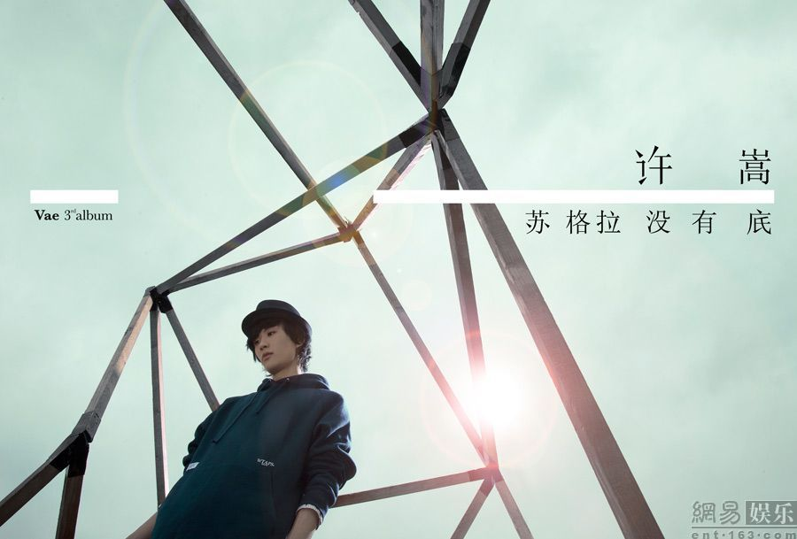
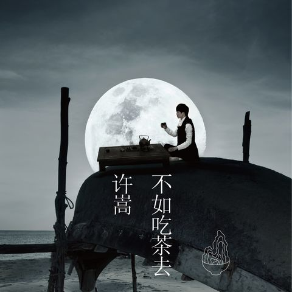
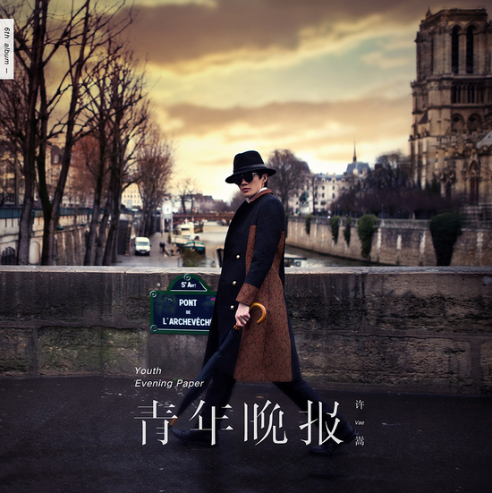
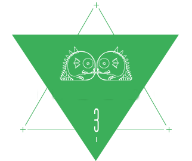
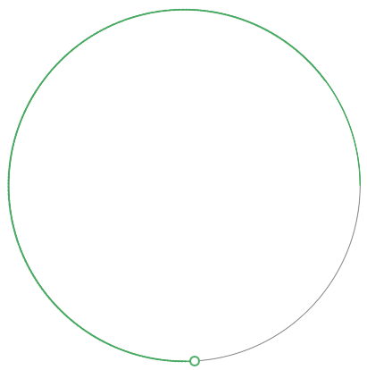
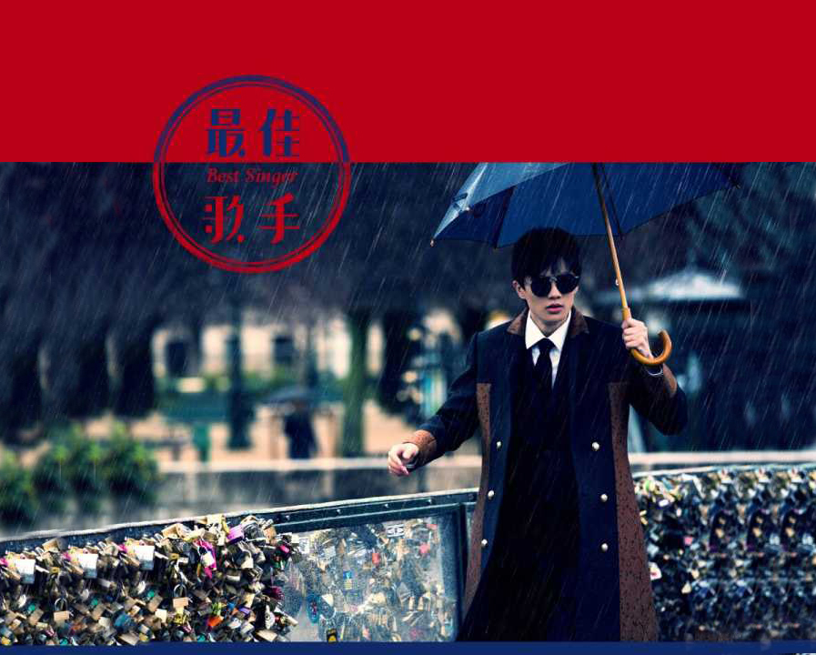

许 嵩

音乐创作人
音乐鬼才
许式情歌
中国风
vae
批判性
海上灵光
有态度
专 辑
- 自定义
- 寻雾启事
- 苏格拉没有底
- 梦游记
- 不如吃茶去
- 青年晚报
- 

- 
- 
这世界 纷纷扰扰流言 烦恼和快乐 各自在堆叠 和你远行去海边 暗喜你浅浅酒窝浮现 潮起潮落是我指使的表演 粉色的信笺 盛满我的思念 风掠过的瞬间 一转眼就不见 飘洋过海陪伴在你身边

平 行 宇 宙


深爱过 所以没有 再联络 不回头 因为勉强的笑 很难受 深爱过 真心感谢你 陪我度过 那几年 苦中有甜的生活
当时的我想不到今天
错过的人回不到从前
当时的你静静坐在我的左手边
梧桐灯下是你静美的侧脸
最佳歌手的头衔
大致上也有人选
最佳歌手的感言
记得要慢慢念
他们说快写一首情歌
雅俗共赏
落笔传神还要容易传唱
上得厅堂也下得厨房
就像我一直在找的姑娘
寒梅落尽把冬了
衔春的燕想归巢
沿途的景 牵挂的人
两情迢迢
十年许嵩，雅俗共赏